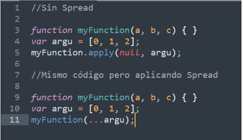

1. Descripción: Esta sintaxis le permite a un elemento con la capacidad de repetirse tal como puede ser un arreglo o una cadena ser expandidos en lugares en los cuales se esperen otros argumentos, en el caso de los objetos se usa para expandirlos en donde valores claves son esperados. 2. Sintaxis. a. Para llamadas de funciones: myFunction(...iterableObj); b. Para arreglos o cadenas de caracteres: [...iterableObj, '4', 'five', 6]; c. Para objetos literales: let objClone = { ...obj };
